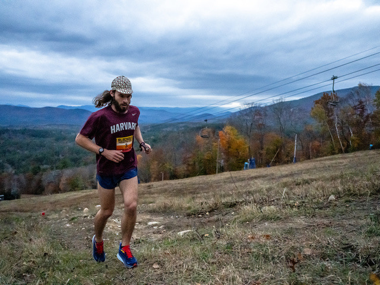
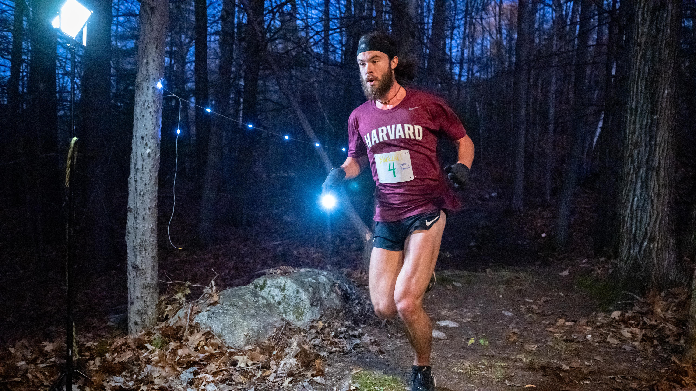
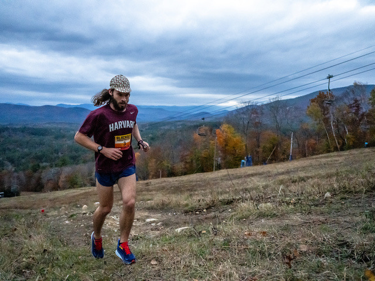
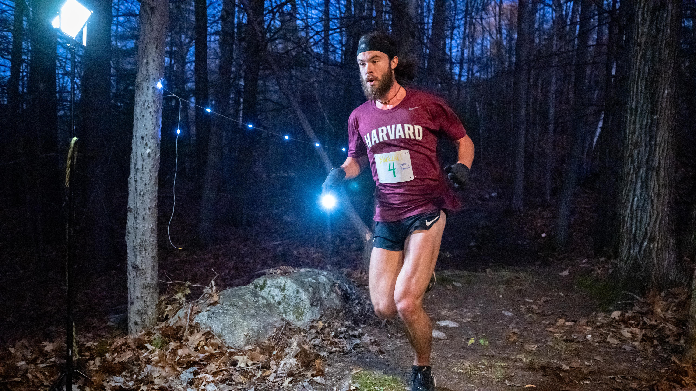

Running
"Why dost thou run so many miles about?"
- William Shakespeare
I am an amateur runner, who is in it mostly for the day to day joy of exercising outdoors. My Strava is found here. I also occasionally race. Some of my results include:
- 1st place (course record), Blackout Mountain Race 10k, November 2024.
- 3rd place, TARC Spring Classic 50k, April 2024.
- 2nd place, Blackout Mountain Race 10k, November 2023.
- 1st place, TARC Fall Classic 50k, September 2023.
- 2nd place, Tahoe Rim Trail Endurance Run 56 mile, July 2023.
- 2nd place, TARC Fall Classic 50 mile, September 2022.
I ran the Newport marathon without a bib in 2025. My time was 2:45:45.
 


